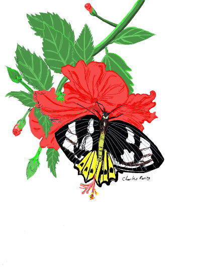

I often see flowers when I guide tourists along the coastal and mountainous areas of West Papua. Because I like drawing very much, I create drawings of these flowers. My favorite media is watercolour pencils on paper. Here are some of them
I usually make sketches using ordinary 2B graphite pencils. I don't draw flowers when I see them in the forest, at the beach or at the frontyards of someone's house. I take pictures of the flowers using my cell phone or a pocket camera and use their photographs as my reference. However, I often practice drawing live by putting certain articles such as flower vase, flashlight, bowl, cups, TL lamps and its plug, or even a printer in front of me.
I also make digital drawings. For the vector ones, I use Inkscape and for the bitmap onee, I use Autodesk Sketchbook. In the past, I user Macromedia Freehand. Digital drawing apps can speed up the process of completing a drawing. But a lot of people still give higher appreciation to artworks that are created manually.
Digital drawings can be set to have transparent background which is very important in logo design and digital printing of t-shirts and other print on demand items.

The above drawing can be uploaded into redbubble and zazzle website that sell print on demand products.
Creating digital flower is similar to creating manual drawing. In digital drawing, I use a stylus to draw artworks on the screens of cell phones and tablet. For instance, I drew the hibiscus flower and priamus butterfly below using Samsung Tab A with S-pen.
My favorite drawing application is Autodesk Sketchbook. Because it is a digital artwork, it is saved as a png file that allows a drawing or illustration to have transparent background. This drawing is now available in redbubble. People can buy it as printed products on t-shirts, mugs, shower curtain, pillows, and etc. If you are interested in buying them, please, have a look at the digital artwork at this link: Hibiscus Flower and Birdwing Butterfly